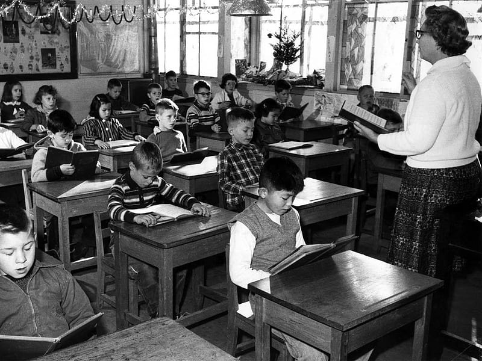

In the realm of education, the teacher-student relationship has long been recognized as a vital component of
effective learning. Beyond imparting knowledge, teachers play a
pivotal role in shaping students' academic, emotional, and social development. In this blog, we will delve
into the transformative power of a strong teacher-student relationship and explore how it can be a game
changer in education.
A positive teacher-student relationship fosters a supportive learning environment where students feel safe, respected, and valued. When students perceive their teacher as approachable and caring, they are more likely to actively engage in the learning process, take risks, and seek help when needed. This nurturing environment paves the way for enhanced academic achievement and personal growth.

Individualized Instruction and Differentiation
A strong teacher-student bond enables educators to better understand their students' unique strengths, weaknesses, and learning styles. Armed with this knowledge, teachers can tailor their instruction to meet individual needs, provide personalized feedback, and implement differentiated strategies. By addressing students' diverse learning requirements, the teacher-student relationship becomes a catalyst for academic progress and increased self-confidence.

Building Trust and Motivation
Trust is the cornerstone of any successful relationship, and the teacher-student dynamic is no exception. When students trust their teacher, they are more inclined to take academic risks, ask questions, and actively participate in class discussions. Furthermore, a positive teacher-student relationship cultivates intrinsic motivation, inspiring students to strive for excellence, embrace challenges, and persist in the face of setbacks.
Social and Emotional Support
Education encompasses more than academic development; it also encompasses social and emotional growth. Teachers who establish meaningful connections with their students can provide vital social and emotional support. They serve as mentors, role models, and confidants, offering guidance, empathy, and encouragement. Such support bolsters students' self-esteem, resilience, and overall well-being, setting the stage for holistic development.
Cultivating a Love for Learning
Passionate and dedicated teachers have the power to ignite a lifelong love for learning within their students. By fostering enthusiasm, curiosity, and a sense of wonder, they create an infectious atmosphere that inspires students to explore, question, and pursue knowledge beyond the classroom. This intrinsic love for learning becomes a driving force that transcends grades and examinations, propelling students towards intellectual growth and personal fulfillment.

Long-term Impact
The impact of a strong teacher-student relationship extends far beyond the school years. Research has shown that students who have experienced positive connections with their teachers are more likely to thrive academically, pursue higher education, and achieve professional success in their adult lives. The enduring influence of a supportive teacher-student relationship highlights its game-changing potential in shaping students' future trajectories.
The teacher-student relationship is a transformative force in education. By creating a supportive learning environment, individualizing instruction, building trust, offering social and emotional support, cultivating motivation, and inspiring a love for learning, teachers can become game changers in their students' lives. As educators, let us recognize and harness the power of these relationships, fostering meaningful connections that empower and uplift our students on their educational journeys.


Comments